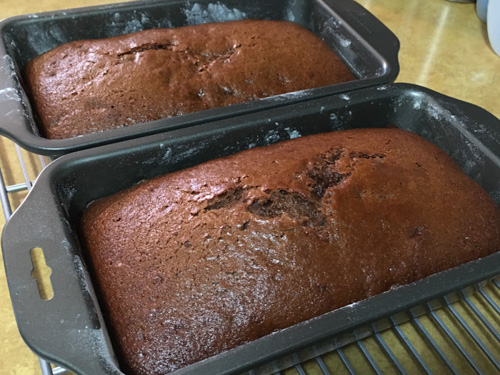

Nanny's War Cake

This is my Grandmother's recipe for war cake. She used to make it for
us every summer when we would come home to visit and is a family favorite.
It's also known as maritime cake or depression cake. The reason being is
that it was made back in the great depression and world wars when ingredients
were either expensive or scarce. This recipe does not use eggs or milk.
Ingredients:
- 1/4 cup margerine
- 2/3 package of raisens
- 2 1/2 cups water
- 1 cup brown sugar
- 1 cup white sugar
- 1 1/2 teaspoons cinnamon
- 1/2 teaspon nutmeg
- 1/2 teaspoon cloves
- 1 apple (cut up)
Directions:
- Boil all these ingredients in pot for 5 minutes then cool.
- Add:
- 2 2/3 cups flour
- 1 teaspoon salt
- 1 1/2 teaspoons baking soda
- Bake in 325°F oven for 1 1/2 hours